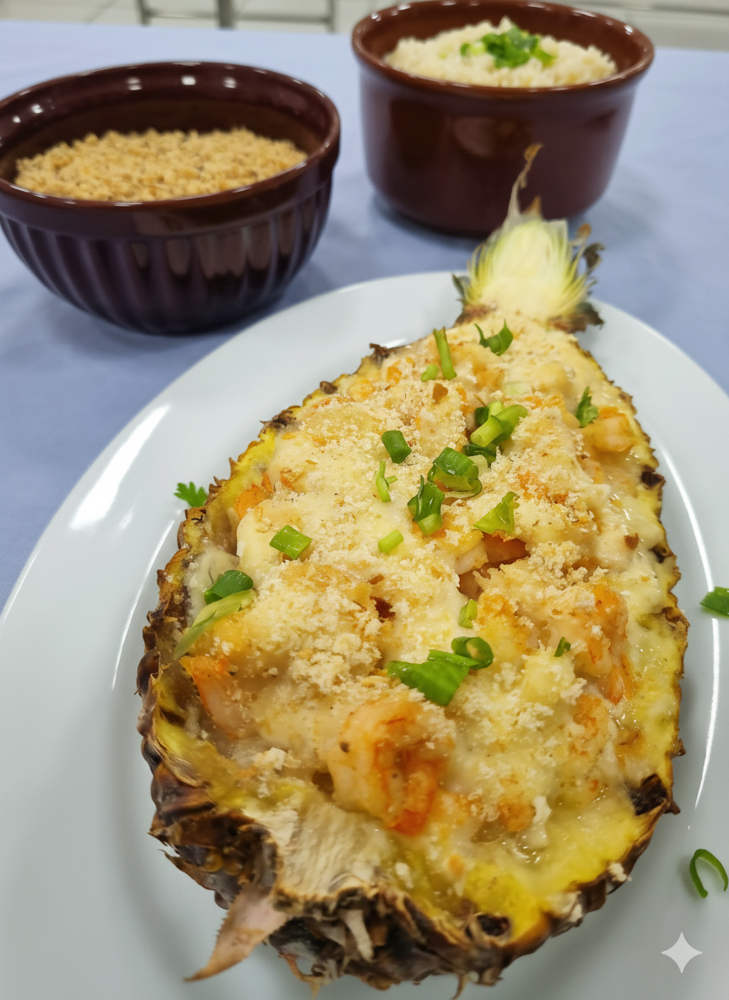
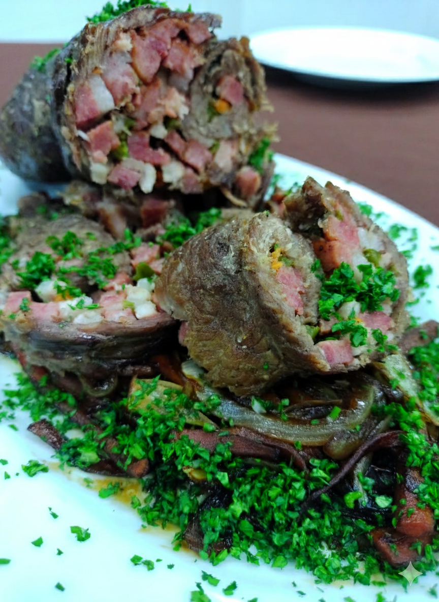
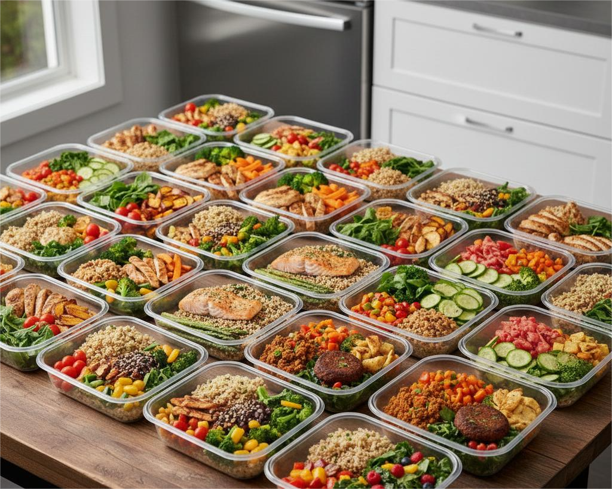
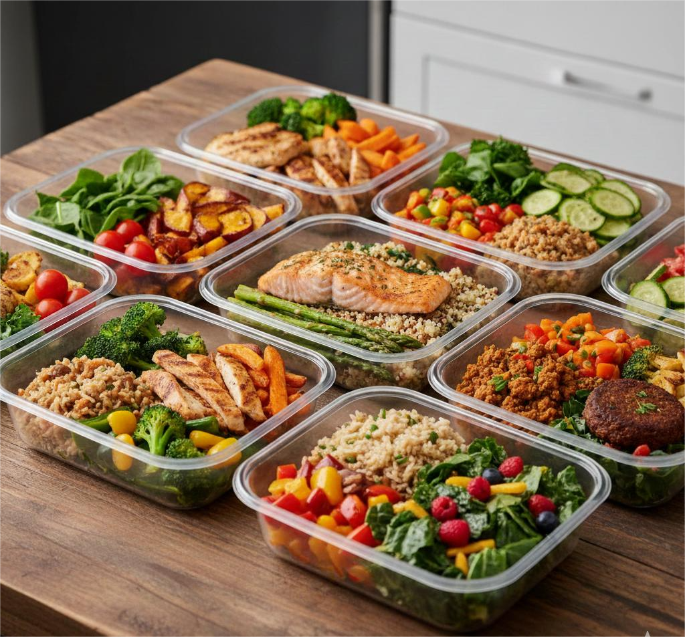

Refeições do dia a dia feitas sob medida pelo seu Personal Chef.
Ganhe tempo na sua rotina agitada com refeições saudáveis, equilibradas e personalizadas.
Conheça os planos


Ganhe tempo na sua rotina agitada com refeições saudáveis, equilibradas e personalizadas.
Conheça os planosAo contratar nosso Personal Chef, você conta com apoio total: compras, criação do cardápio, preparo das refeições e organização final da cozinha.
Atendemos dietas, restrições e preferências alimentares com um menu personalizado, pensado para o seu dia a dia.
Escolha a frequência ideal: todos os dias ou em dias específicos. Nosso serviço se adapta à sua rotina e da sua família.
Cardápio semanal personalizado conforme seu gosto. Marmitas e lanches sem limite de variação.
Pedir no WhatsApp
Opções práticas e objetivas, ideais para períodos curtos ou pedidos pontuais.
Pedir no WhatsApp
O serviço de personal chef inclui o planejamento completo do cardápio, preparo das refeições (marmitas ou pratos prontos), organização da cozinha utilizada e orientações sobre armazenamento e consumo. Tudo é feito de forma personalizada, respeitando preferências, restrições alimentares e rotina do cliente.
As marmitas são preparadas na cozinha do próprio personal chef, em um ambiente organizado e seguindo padrões rigorosos de higiene e segurança alimentar. Isso garante mais conforto para você e zero impacto na sua rotina.
Esse formato evita cheiro de comida espalhado pela casa por dias, não ocupa sua cozinha por horas, preserva totalmente sua privacidade e elimina barulho, bagunça ou circulação de terceiros no seu espaço. Você recebe tudo pronto, organizado e pronto para consumo.
Sim. Também oferecemos a opção de preparo na residência do cliente. Esse formato é ideal para quem deseja refeições feitas na hora ou uma experiência gastronômica exclusiva no próprio ambiente.
Sim. O personal chef pode ser contratado para jantares especiais, ceias comemorativas, encontros românticos, aniversários e eventos intimistas. O cardápio é totalmente personalizado de acordo com a ocasião e número de convidados.
A contratação pode ser mensal, semanal ou avulsa. Também é possível contratar apenas um jantar, uma ceia ou um evento específico. Os valores variam conforme cardápio, quantidade de pessoas e local de preparo.
Primeiro queria dizer que a comida é muito boa, adorei!
Ana T.O resto tá super bom como sempre.
Pedro L.A gente adora suas comidas.
Pedro L.O peixe com creme de espinafre tava uma delícia.
Victor G.